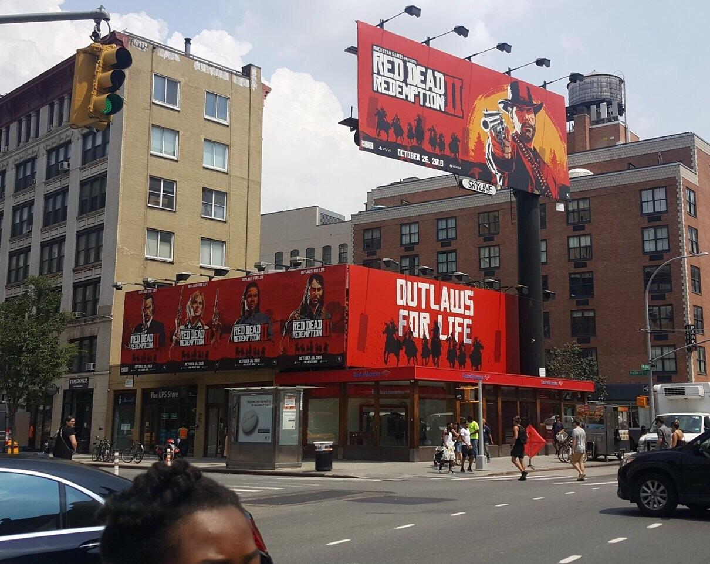

O desenvolvimento inicial de Red Dead Redemption 2 teve início logo após o lançamento do jogo original, Red Dead Redemption (2010), que teve um grande sucesso. A publicadora Rockstar Games começou a considerar propostas internas para uma continuação ainda durante a produção do primeiro título, e considerou a ideia de explorar uma narrativa focada em uma gangue como algo "irresistível demais para ser descartado". O vice-presidente de criação, Dan Houser, junto com uma equipe-chave de desenvolvedores, elaborou o conceito do novo jogo. No começo de 2011, Houser entrou em contato com a Rockstar San Diego — o estúdio responsável pelo título original — para discutir os personagens e a estética desejada para a sequência. Já no meio daquele ano, a equipe havia criado um esboço, e até o fim de 2012, os roteiros estavam finalizados. Para garantir o alinhamento criativo, Houser organizou leituras do roteiro por videoconferência com diretores de animação, arte e jogabilidade de todos os estúdios da Rockstar ao redor do mundo. Quando a empresa percebeu que o trabalho de estúdios separados não seria tão eficiente, decidiu unificar seus esforços: todos os estúdios foram reunidos sob o nome Rockstar Games, formando uma megaequipe de desenvolvimento com cerca de 1.600 profissionais. Ao todo, aproximadamente 2.000 pessoas estiveram envolvidas no projeto. Rob Nelson, diretor de estúdio, assumiu a liderança da Rockstar North, que contava com 650 membros, e passou a se dedicar integralmente à produção na segunda metade do processo, após concluir outros compromissos. Estimativas de analistas apontam que o orçamento de desenvolvimento do jogo ficou entre US$ 170 e US$ 240 milhões, enquanto os gastos com marketing variaram de US$ 200 a US$ 300 milhões. Com um investimento total estimado entre US$ 370 e US$ 540 milhões, Red Dead Redemption 2 se destaca como um dos jogos mais caros da história da indústria.
